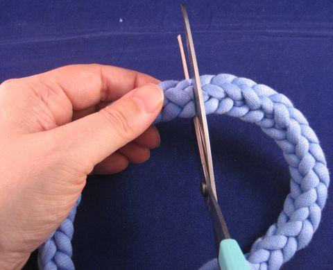
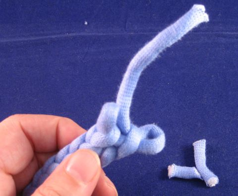
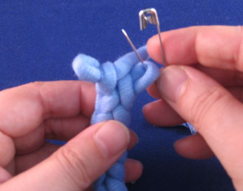
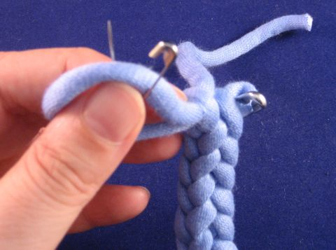
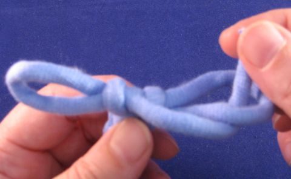
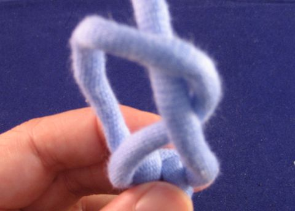
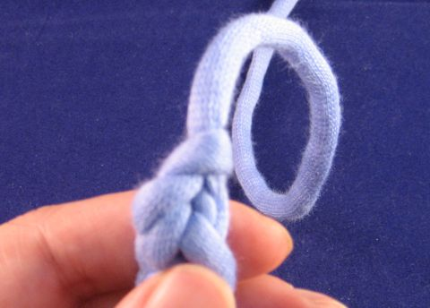

Jos haarukkanyörin katkaisee, se alkaa purkautua, ellei sitä viimeistellä jotenkin. Nyörin päähän voi tietenkin tehdä solmun tai pään voi kastaa liimaan. Rihmaus on vähän elegantimpi tapa viimeistellä leikattu pää. Jos lanka on vähän paksumpaa (tai sinulla näppärät sormet ja hyvät silmät), on myös mahdollista päätellä leikatut päät samalla tavalla kuin päätellään nyöri punottaessa.
On yleensä parempi tehdä nyöri valmiiksi määrämittaan kuin säätää sen kanssa jälkikäteen. Eli jos tarvitset 3 x 1,5 metriä nyöriä, tee kolme puolitoistametristä yhden noin viisimetrisen sijasta, ellet todella nauti katkaistun nyörin päiden kanssa näpertämisestä.
Tarvitset katkaistavan nyörin, sakset, kaksi hakaneulaa (tai avattavia neulemerkkejä) ja nuppineulan (jos lanka on ohutta) tai parsinneulan tai ohuen sukkapuikon (jos lanka on paksumpaa), jotain pientä ja melko terävää. Koktailtikku tai haarukkakin voi toimia paremman puutteessa.
- Jos teet määrämittaista, merkitse toivottu nyörin päättymiskohta jotenkin, esimerkiksi kolmannella hakaneulalla. Jos teet useita määrämittaisia nyörejä, ota huomioon, että leikkaaminen ja päättely lyhentää nyöriä noin 5 cm/pää.
- Katkaise nyöri saksilla. Jos teet määrämittaista, katkaise nyöri 5 cm merkityn päättymiskohdan yläpuolelta.
 - Ota toinen katkaistuista päistä ja neula/muu piikki ja nypi sen avulla varovaisesti pois irtonaiset langanpätkät. Tämän jälkeen nyörin päässä pitäisi olla kaksi silmukkaa, toinen vähän alempana kuin toinen, ja lanka. Vedä varoen langan päästä, jolloin nyöri purkautuu vähän ja lanka pitenee. Jos teet määrämittaista, pura nyöriä lopetusmerkkiin asti.
 - Aseta nyöri pöydälle niin kuin se olisi nyörihaarukassa: vasemmalla vähän ylempänä oleva silmukka, oikealla alempana oleva silmukka ja lanka. Kiinnitä hakaneula oikealla olevaan silmukkaan.
 - Vedä vasemmanpuoleista silmukkaa varovaisesti isommaksi. Yritä ottaa väljyys langan päästä, ei oikeanpuoleisesta silmukasta. Kiinnitä toinen hakaneula vasemmalla olevaan lenkkiin.
 - Vedä oikeanpuoleista silmukkaa isommaksi. Väljyys tulee vasemmanpuoleisesta silmukasta, yritä olla vetämättä sitä ihan pieneksi (hakaneula toimii stopparina).
- Ota oikeanpuoleinen hakaneula pois. Ota langan pää ja pujota se alhaalta ylös oikeanpuoleisen silmukan läpi.
 - Vedä vasemmanpuoleisesta silmukasta etupuolelta, jotta oikeanpuoleinen silmukka kiristyy langan ympärille.
- Ota jäljellä oleva hakaneula pois. Pujota lanka silmukan läpi ja kiristä silmukka langasta vetämällä.
 - Nyöri on päätetty purkautumattomasti.

Toista toisella katkaistulla nyörinpäällä.